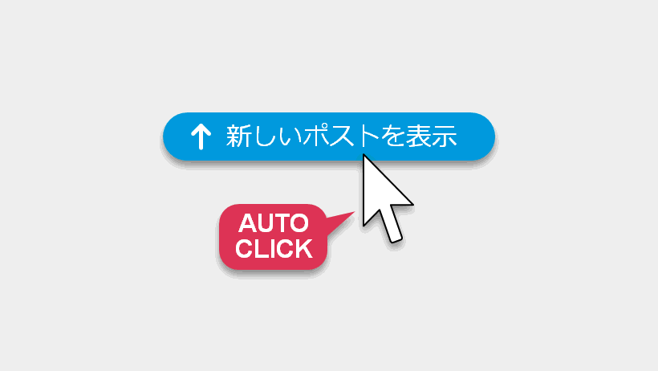

XProAutoTop: XPro の「新しいポストを表示」を自動的にクリックする UserScript
2024/12/29 |
記事のソース

XPro (旧TweetDeck) でことある毎に現れて TL の読み込みを止めてしまう「新しいポストを表示」のボタンを自動的にクリックする Greasemonkey UserScript を書きました。
Firefox/Chrome + Violentmonkey/Tampermonkey で動作確認しました。
ダウンロード/インストール: XProAutoTop (GitHub)